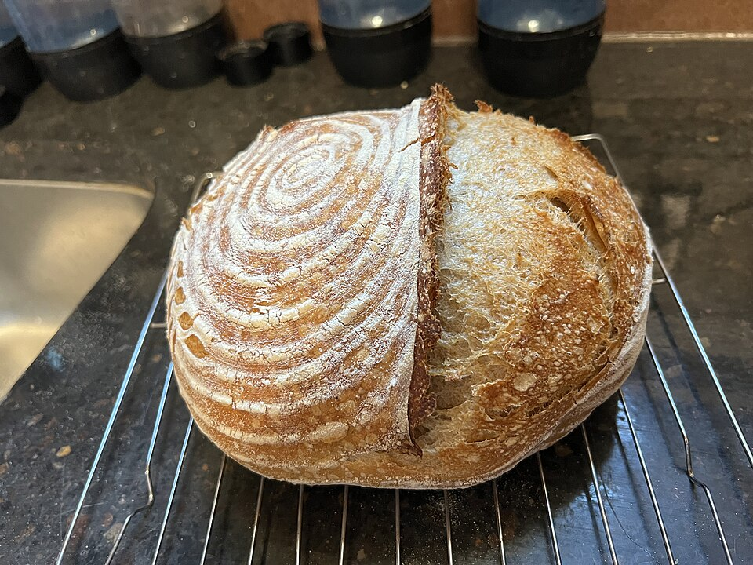

Sourdough bread
Home

Description
Made with just a few basic ingredients, this sourdough bread recipe is simple yet satisfying.
Sourdough bread gets its unique flavour and texture through a slow fermentation process using a sourdough starter.
Perfect for enjoying fresh out of the oven or alongside your favourite meals.
Ingredients
- 100 grams active sourdough starter
- 394 grams bread flour
- 250 grams water
- 8 grams kosher salt
- 2 tablespoons rice flour
Steps
- Add starter to a bowl. Add flour, water and salt. Mix until blended well.
- Cover with aluminum foil or a towel, let the dough rest for 4 hours at 21 to 24 ℃.
- Use wet hands to fold the dough over itself, do this three to four times.
- Dust a proofing basket generously with rice flour.
- Remove the dough from the bowl and put it on a floured work surface. shape the dough into a ball and put it in the proofing basket with the smooth side down.
- Push the rough edges on the surface together towards the centre, try to maintain a round ball shape.
- Cover the proofing basket and put the dough in the fridge for 12 hours.
- Remove the proofing basket from the fridge and put in a warm spot for 3 to 5 hours.
- Preheat your oven to 230 ℃ and place parchment paper over a rimmed baking sheet.
- Dust the top of the dough with flour and invert the dough onto the baking sheet. Brush of excess rice flour and score the top of the dough with a knife. Spray water over the entire surface.
- Bake in the oven for 25 to 30 minutes.
- Let the bread rest on a wire rack until cooled completely before slicing.